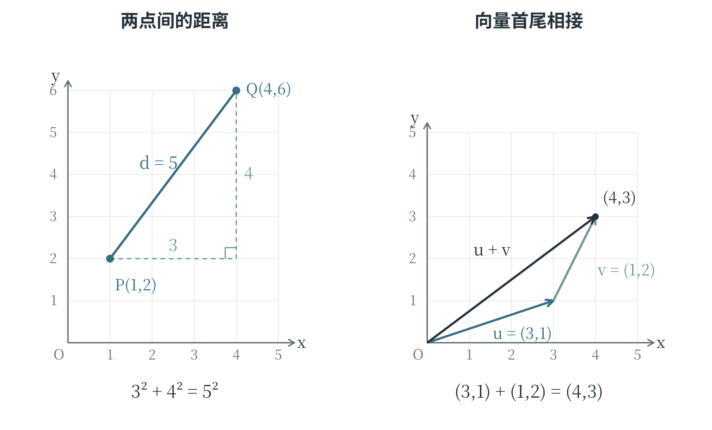
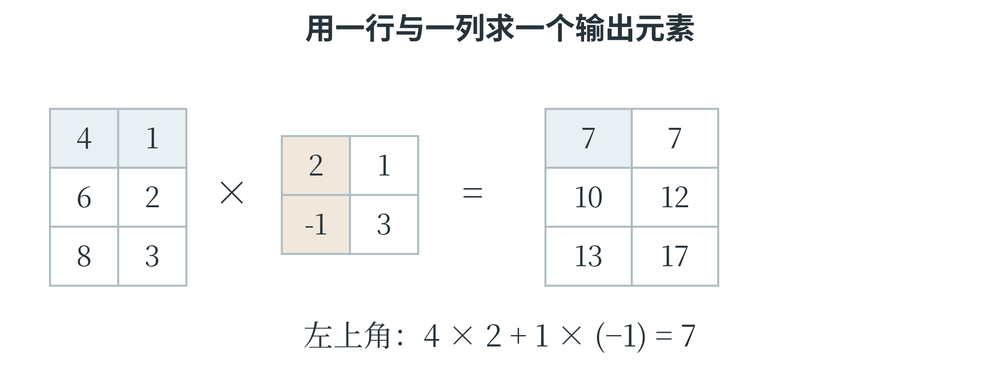

3.4 坐标、向量与矩阵
用坐标表示数据
坐标可以描绘函数，也可以表示一批观测记录。把叶片长度放在横轴、宽度放在纵轴，每片叶子就对应一个点，这便是前面散点图的画法。例如，一片叶子长 3 厘米、宽 1 厘米，可以记为 \((3,1)\)。这里的坐标描述测量值，不表示叶子在地面上的实际位置。两个轴各表示什么、采用什么单位，都要随所研究的数据明确下来。
用两个数确定一个点的位置，称为二维。在空间中，再增加一条与前两条轴都垂直的 \(z\) 轴，便能用 \((x,y,z)\) 三个数表示位置，这就是三维。数据也可以增加第三项，例如在叶片长度、宽度之外再记录面积。一条记录含有多少个数值，就可以把它看成多少维的数据；每一维都有自己的含义。把记录表示成点以后，点之间相隔多远，也就成为比较记录的一种办法。下面先从平面中的两个点看起。
两点之间的距离怎样计算
图 3-6 左图中，\(P(1,2)\) 与 \(Q(4,6)\) 的横坐标相差 3，纵坐标相差 4。把水平、竖直两个方向的差作为直角三角形的两条直角边，连接 \(P\)、\(Q\) 的线段就是斜边。勾股定理说明，直角三角形两条直角边长度的平方和，等于斜边长度的平方。因而这段距离的平方为 \(3^2+4^2=25\)，距离为 5。
若两点分别为 \((x_1,y_1)\) 和 \((x_2,y_2)\)，用 \(d\) 表示它们的距离，就得到：
这样的距离称为欧氏距离，在平面中就是熟悉的直线距离。计算时，先在相同位置上相减，再平方、相加，最后开平方。相减顺序颠倒会改变差的正负，却不会改变平方后的结果，因此从 \(P\) 到 \(Q\) 和从 \(Q\) 到 \(P\) 的距离相同。

三维距离的计算再增加一个方向上的差。例如，\((1,2,3)\) 与 \((3,3,5)\) 对应分量的差为 2、1、2，距离为 \(\sqrt{2^2+1^2+2^2}=3\)。人工智能中，一条记录往往包含更多数值：叶片长度、宽度、面积等，每一个数值都可以占一个位置。即使这些位置无法在纸上画成空间，仍能按相同规则求距离：各位置的差平方后相加，再开平方。
这个方法也提醒了一个容易忽略的问题：距离取决于怎样表示数据。同一片叶子的长度，用厘米记录是 5，用毫米记录是 50。如果某一列改了单位而其他列没有改，这一列对距离的影响就可能明显改变。把数值放进公式之前，要弄清它们的意义和单位；不同尺度怎样处理，将在机器学习部分讨论。用一组数字表示词语或图片以后，距离可以帮助比较它们，但距离是否反映所关心的相似程度，还取决于这些数字是怎样得到的。
向量及其基本运算
按顺序排列的一组数可以看作一个向量，每个位置上的数叫作一个分量，分量的个数称为向量的维数。例如 \(u=(3,1)\) 是二维向量，\(v=(1,2,3)\) 是三维向量。二维、三维向量还可以画成箭头：二维向量 \((3,1)\) 表示水平方向移动 3、竖直方向移动 1。箭头可以从原点出发，也可以从其他点出发，只要长度和方向相同，就表示同一个向量。点用于说明“在哪里”，位移向量用于说明“怎样移动”；两者都能写成有顺序的数，但含义需要区分。
相同维数的向量可以按对应分量相加、相减。取 \(u=(3,1)\)、\(v=(1,2)\)，就有：
向量相加也可以用首尾相接的箭头表示：先按 \(u\) 移动，再按 \(v\) 移动，从最初起点指向最终终点的箭头表示 \(u+v\)，如图 3-6 右图。用一个数乘向量，就把每个分量都乘这个数，例如 \(2u=(6,2)\)。正数倍使箭头沿原方向伸长或缩短，负数倍还会把方向反转；乘以零得到各分量都为零的零向量。
两个同维向量的对应分量相乘，再把乘积相加，称为内积，也常叫作点积。例如 \(a=(2,1)\)、\(w=(3,4)\)，则 \(a\cdot w=2\times3+1\times4=10\)。点积的结果是一个数。如果 \(a\) 的分量表示两个输入数值，\(w\) 的分量表示各自的权重，这个计算正好给出加权求和。许多模型就是先做这样的运算，再进行下一步处理。向量从起点到终点的距离称为它的长度，也称为这里所用的欧氏范数。\((3,4)\) 的长度是 5，而它与自身的点积是 \(3^2+4^2=25\)，等于长度的平方。
点积和距离虽然都会用到乘法与加法，却不是同一种运算。例如，\((3,4)\) 与自身的距离为零，与自身的点积却是 25：一个在比较差异，另一个在累加对应分量的乘积。
同一组数可以参与不同运算
向量的加法、点积和距离都使用分量，但回答的问题各不相同。取 \(a=(2,1)\)、\(b=(5,3)\)，相加得到 \((7,4)\)，结果仍是二维向量；相减得到 \((3,2)\)，表示从 \(a\) 所在的点移到 \(b\) 所在的点需要怎样改变两个坐标；欧氏距离是 \(\sqrt{3^2+2^2}=\sqrt{13}\)；点积则是 \(2\times5+1\times3=13\)。这个例子中距离的平方恰好等于点积，只是数值上的巧合，换成别的向量通常就不相等。
点积适合把多个输入合成一个结果。设叶片的两个测量值为 \(x=(4,2)\)，权重为 \(w=(3,-1)\)，则 \(x\cdot w=4\times3+2\times(-1)=10\)。第一项权重为正，长度增加会使结果增加；第二项权重为负，宽度增加会使结果减少。若保持长度为 4、把宽度从 2 改成 3，结果变为 9。这样的变化可以直接由各分量的贡献解释，无须先把整个模型当成一个难以看清的整体。
记录中的分量顺序必须一致。如果一条记录按“长度、宽度”排列，另一条却按“宽度、长度”排列，它们在同一位置的数就没有相同含义。距离与点积仍可能算出一个数，但这个数已经不能表达原本想比较的关系。数学公式要求形状相容，实际建模还要求位置的意义相容，两项条件需要同时满足。
矩阵把一批数据排在一起
把数按横行、竖列排成一个长方形，就得到矩阵。例如，下面的矩阵 \(A\) 有 2 行、3 列，称为一个 \(2\times3\) 矩阵；这里的 \(2\times3\) 说明形状，不是把矩阵变成数字 6。
矩阵中的每个数叫作一个元素，通常用 \(a_{ij}\) 表示第 \(i\) 行、第 \(j\) 列的元素。因此，\(a_{12}=1\)，\(a_{23}=1\)。数学中这套下标通常从 1 开始，读取 Python 列表或数组的位置则通常从 0 开始，需要按所使用的规则判断。若每一行对应一片叶子，每一列对应一种测量值，一个矩阵便能装下整批测量记录；图像的像素数值也常按行、列组织。
矩阵的基本运算先从形状入手。只有行数、列数分别相同，两个矩阵才能按对应位置相加、相减；用一个数乘矩阵，则把每个元素都乘这个数。把原来的行变成列、列变成行，称为转置，用右上角的 \(T\) 表示。上面的 \(A\) 转置后为：
矩阵乘法有一套专门的规则。先看矩阵乘向量：把 \(w=(1,2,1)\) 竖着写成一列，用 \(A\) 的每一行分别与它做点积，就得到一个两分量的结果：
左边矩阵有 3 列，右边向量就必须有 3 个分量，点积才能一一对应。结果有 2 个分量，是因为左边矩阵有 2 行。如果每行是一条输入记录，右边是所有记录共同使用的权重，这一次运算就同时完成了两条记录的加权求和。
矩阵乘矩阵时，也是取“左边的一行”与“右边的一列”做点积。例如：
结果的第 1 行第 1 列是 \(1\times2+2\times1=4\)，第 1 行第 2 列是 \(1\times0+2\times5=10\)，其余位置同理。一般来说，一个 \(m\times n\) 矩阵可以乘一个 \(n\times p\) 矩阵，结果的形状是 \(m\times p\)；中间的两个 \(n\) 必须相同。
这里的乘法与“两个同形状矩阵按对应元素相乘”不同，后者应明确称为逐元素乘法。矩阵乘法一般不能随意交换顺序，交换后即使形状允许计算，也可能得到不同结果。
沿着行和列完成一次矩阵乘法
矩阵乘法的形状规则，可以通过一批叶片的两个测量值来理解。把三片叶子的长度、宽度排成输入矩阵 \(X\)，再用权重矩阵 \(W\) 同时计算两种得分：第一列权重用于得分甲，第二列权重用于得分乙。
第一片叶子的得分甲，用第一行 \((4,1)\) 与第一列 \((2,-1)\) 做点积，得到 \(4\times2+1\times(-1)=7\)；得分乙用同一行与第二列 \((1,3)\) 做点积，得到 \(4\times1+1\times3=7\)。第二片叶子换用第二行，两个结果分别为 10 和 12。所有位置都这样计算，便有：

输入的三行对应三片叶子，输出仍有三行；权重有两列，表示要计算两种得分，输出于是有两列。中间共同的数 2 表示每次点积有两项相乘：长度对长度的权重，宽度对宽度的权重。写成形状关系就是 \((3\times2)(2\times2)\rightarrow3\times2\)。图中把第一项计算单独标出，其余五个位置遵守同样的规则。
逐元素乘法采用另一种配对方式。例如，两个 \(2\times2\) 矩阵逐元素相乘，每个位置只与另一矩阵的相同位置相乘，不会再把一行与一列的乘积加起来。后面使用 NumPy 时，* 通常表示逐元素乘法，@ 才表示这里的矩阵乘法。同样出现一个乘号或“乘”字，必须先确认采用的规则。